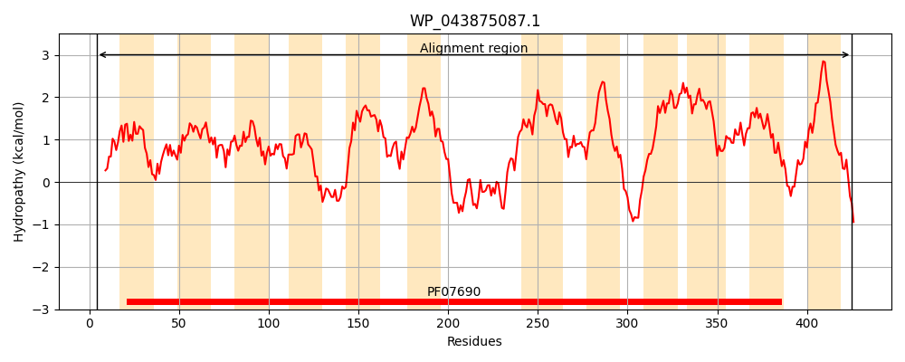
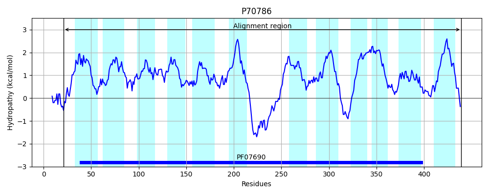
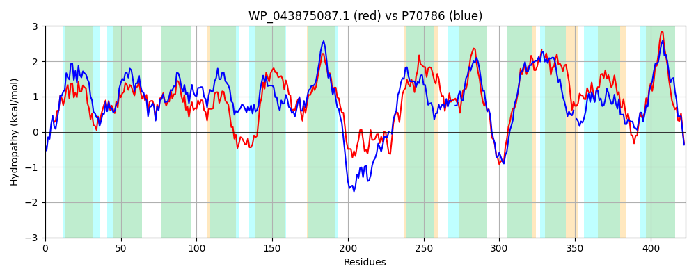

Hit Accession: P70786
Hit TCID: 2.A.1.14.3
Hit Description: gnl|BL_ORD_ID|11301 gnl|TC-DB|P70786|2.A.1.14.3 Putative tartrate transporter - Agrobacterium vitis.
Mach Len: 423
e:0.000000
Query TMS Count : 12
Hit TMS Count: 12
TMS-Overlap Score: 10.650000
Predicted Substrates:CHEBI:35396;tartrate
BLAST Alignment:
Score: 929 , Bit scores: 362 bits, E-value: 3.5e-122, Alignment length: 423, Percentage identity: 44
Query: 4 ELCTSTLKKLNSKIIPFIIICYFVANLDKTNISIAALQMNADLGLTASMYGLGVGMFYISYIIFEIPSNLIMTRVGARIWIARIMITWGMVSAGMAFVQTPTQLYIMRFLLGMAEAGFTPGIIYYISCWFPKRNRARAMSFFYMGSVLASIIGLPVSGLILNMHGIADVAGWRWLFAIEGVPAIVLGALVLWLLPSSPQKAAWLSEAEKGWLTAQIAADNRGAVVNQHASWFSALKNKVVLLLSLVWFLQAFGSIGITLFLPLILKSMASEQSDVVISLLSAVPFIFACLFMYLNGRHSDLTGERAWHMGLPLILAGLSLAVAIYAGNL-LVAYLLLVLTVGFNFALTPVFWAVTTEKLAGVAAAASIAFINTIANFVGLGLPPLLGKIKDLTNSYHSGLLIVAVALALGGIIGIIVSRSGQK 425
+L L+K+ +I+PFI++ YF+A LD+ NI AAL MN DLG +++++G+G G+F++ Y +FE+PSNLI+ +VGARIWIAR+MITWG+VS MAFVQ T YI+RFLLG+AEAGF PGII Y+S WFP R RA + F + L++++G P+SG ++ MHG+ +AGW+W+F IE PA++LG +VL+ L P+KA WL+E E+ WL + A+ G H S + L + V+ L+LV+F + G + ++ P I+K S + + ++AVP IFA + M L RHSD TGER WH+ +LA LA A A ++ +V L ++ VG + + P+ W++ T L+G AAAA IA IN+I N G P ++G IKD T S+ GL VA L + I+ +I++RS K
Sbjct: 21 DLEARVLRKITFRIVPFIMLLYFIAFLDRVNIGFAALTMNQDLGFSSTVFGIGAGIFFVGYFLFEVPSNLILNKVGARIWIARVMITWGIVSGLMAFVQGTTSFYILRFLLGVAEAGFFPGIILYLSFWFPARRRAAVTALFMAAAPLSTVLGSPISGALMEMHGLMGLAGWQWMFLIEAAPALILGVVVLFFLTDRPEKAKWLTEEERNWLVKTMNAEQAGRGTASH-SVMAGLADIRVIALALVYFGTSAGLYTLGIWAPQIIKQFG--LSAIEVGFINAVPGIFAVVAMVLWARHSDRTGERTWHVVGACLLAAAGLAFAAGATSVFMVLIALTIVNVGISCSKPPL-WSMPTMFLSGPAAAAGIATINSIGNLGGFVGPSMIGWIKDTTGSFTGGLYFVAGLLLISAILTLILARSSPK 439 | Protein Hydropathy Plots: |
|---|
|  |  |
Pairwise Alignment-Hydropathy Plot:
|
|---|
|  |